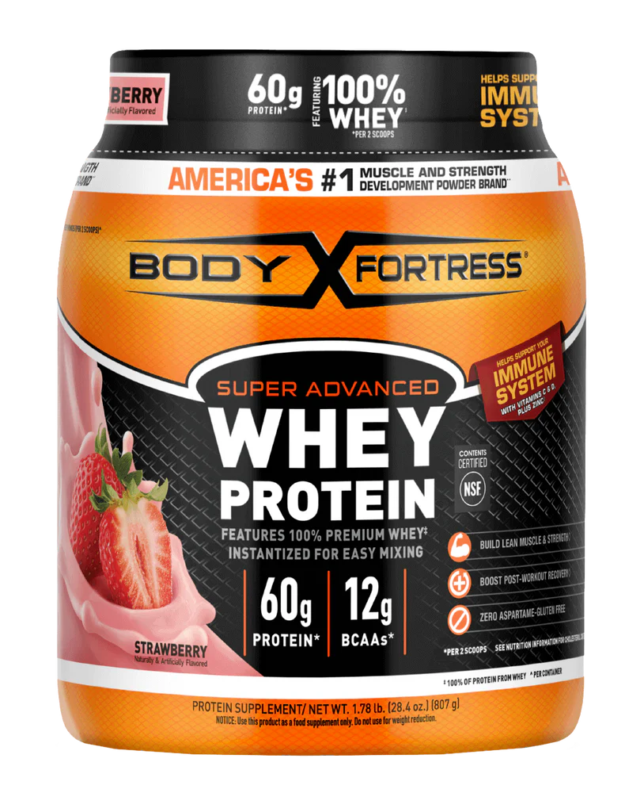

This is a box
1. The Foundations of Bodybuilding:
Bodybuilding is a sport that goes beyond lifting weights; it’s a lifestyle dedicated to sculpting the body through resistance training, nutrition, and discipline. It involves a commitment to building lean muscle mass, reducing body fat, and achieving symmetry and proportion. A key element in bodybuilding is creating a consistent workout regimen, targeting different muscle groups, and progressively challenging the body with heavier weights or more intense exercises. Recovery is equally important, as muscles grow during rest when they repair microscopic tears caused by training.
2. Protein Powder in Bodybuilding
Protein is a cornerstone of bodybuilding nutrition. It plays a vital role in muscle repair and growth, making it a priority in a bodybuilder's diet. While whole food sources like chicken, eggs, and fish are excellent, protein powders offer a convenient and quick way to meet daily protein requirements. Popular forms include whey, casein, and plant-based proteins like pea or rice. Whey protein, in particular, is highly favored due to its rapid absorption and complete amino acid profile, making it an ideal post-workout supplement.
- White bread
- Cucumber slices
- step 1
- step 2
- step 3
- Cream cheese
3. Choosing the Right Protein Powder
The choice of protein powder depends on individual goals and dietary restrictions. For those aiming to bulk up, whey protein isolate or concentrate is ideal due to its high protein content and minimal fats or carbs. Vegans or individuals with lactose intolerance may prefer plant-based options. It’s also crucial to select products with minimal additives and high protein-to-calorie ratios to maximize results. Timing is another consideration; taking protein after a workout can optimize muscle recovery.
4. Arnold Schwarzenegger: The Icon of Bodybuilding
Arnold Schwarzenegger, often regarded as the most influential bodybuilder of all time, revolutionized the sport. Born in Austria, he won the prestigious Mr. Olympia title seven times, showcasing unparalleled dedication and physique. Schwarzenegger's training philosophy emphasized heavy compound movements like squats, bench presses, and deadlifts. His charisma and success in Hollywood further elevated bodybuilding, making it a mainstream pursuit and inspiring millions worldwide to pick up weights.5. Arnold’s Impact on Modern Bodybuilding
Beyond his competition days, Schwarzenegger has continued to shape bodybuilding culture. He authored books like The Encyclopedia of Modern Bodybuilding, considered a bible for enthusiasts, and has been instrumental in promoting the Arnold Sports Festival, one of the largest multi-sport events globally. His contributions extend to motivating athletes to embrace the blend of hard work, mental focus, and strategic nutrition, including the use of supplements like protein powders.6. The Synergy of Protein Powder and the Arnold Mentality
Arnold Schwarzenegger's approach to training exemplifies the importance of combining dedication, proper nutrition, and smart supplementation. For modern bodybuilders, protein powder represents a tool that complements rigorous training, echoing Arnold’s mantra of working smarter and harder. His legacy reminds aspiring bodybuilders that success is built on consistency, education, and passion—a philosophy that remains relevant in every gym today.Jump to top